外に面した焼き台から香る、香ばしい匂い。
珍しい希少な部位もお楽しみいただける大振りな焼き鳥をご提供いたします。
お立ち寄りやすい雰囲気のある店内です。
錦糸町でサクッと飲みたい方は、ぜひ「ヤキトリネクストサークル」へお越しください！
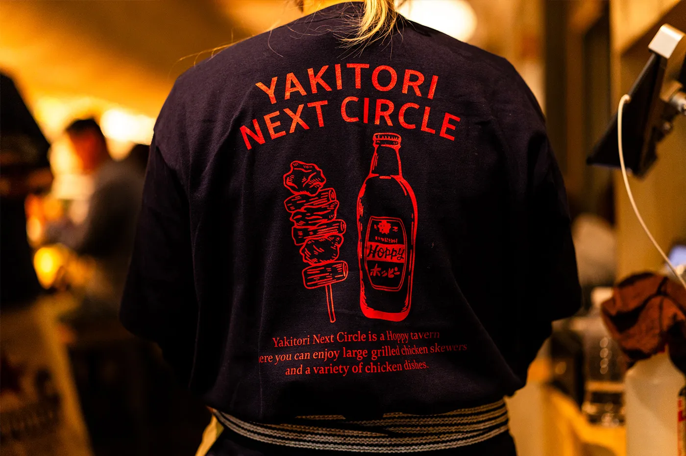
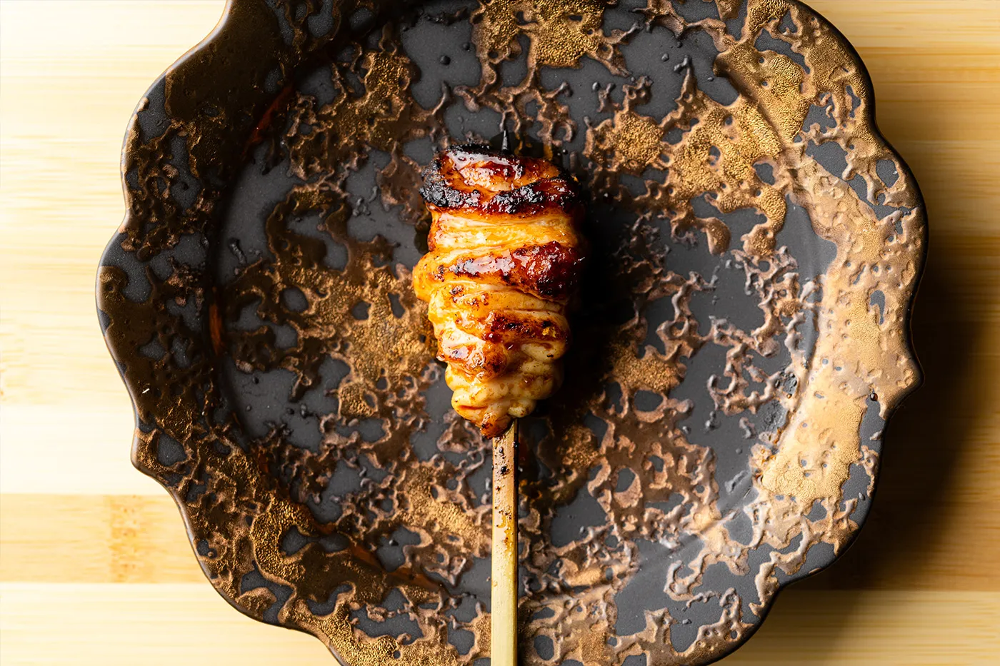
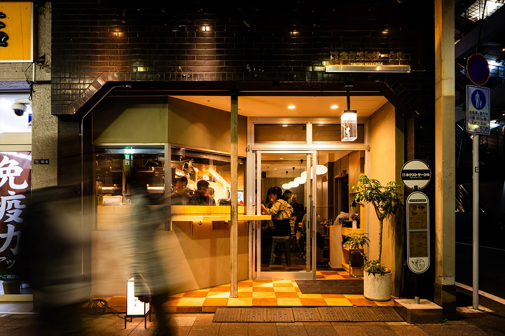
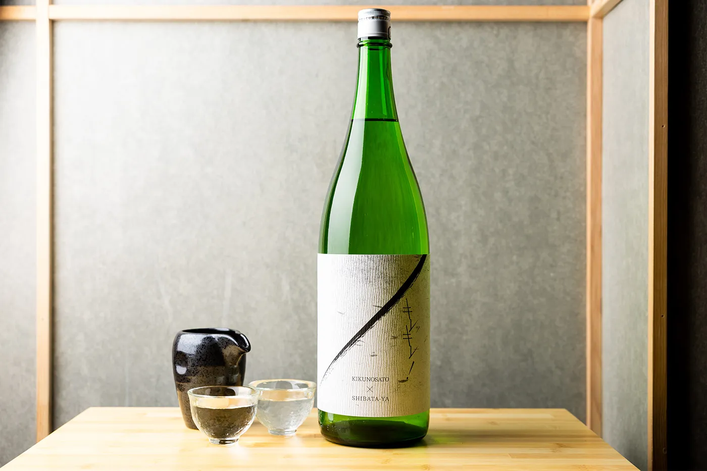
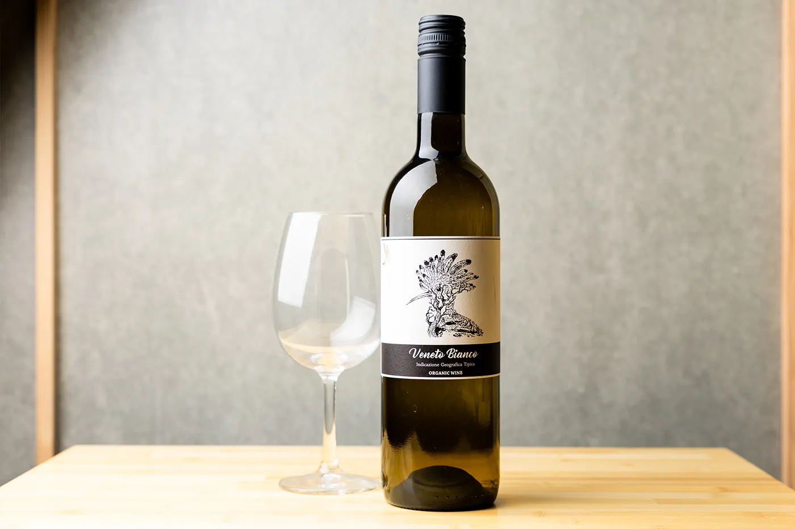
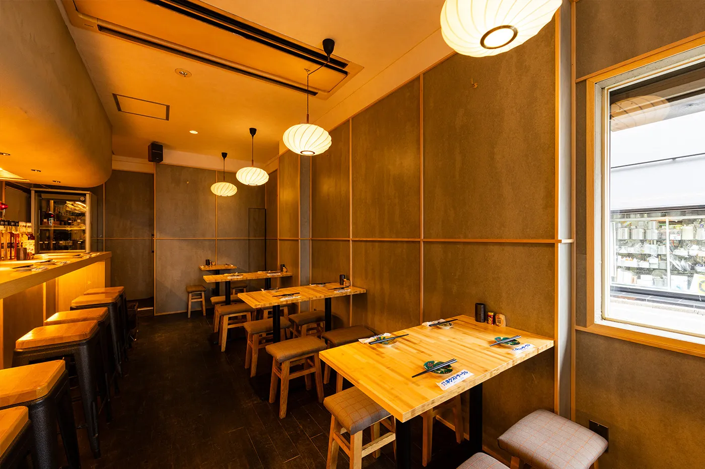
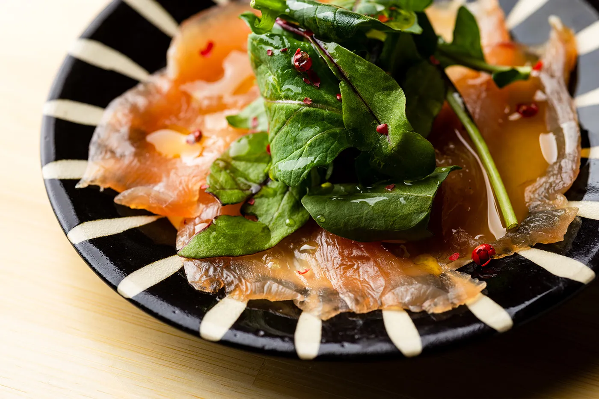
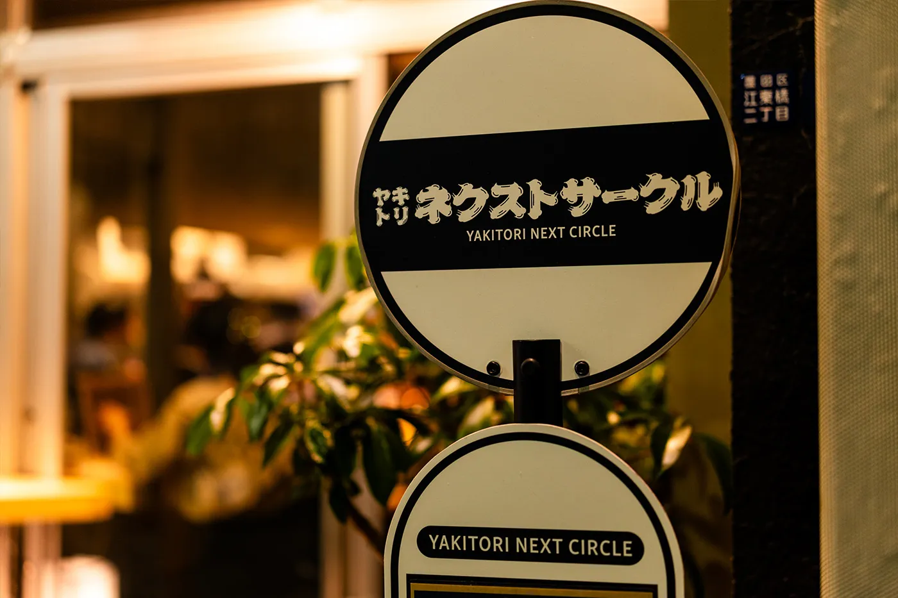
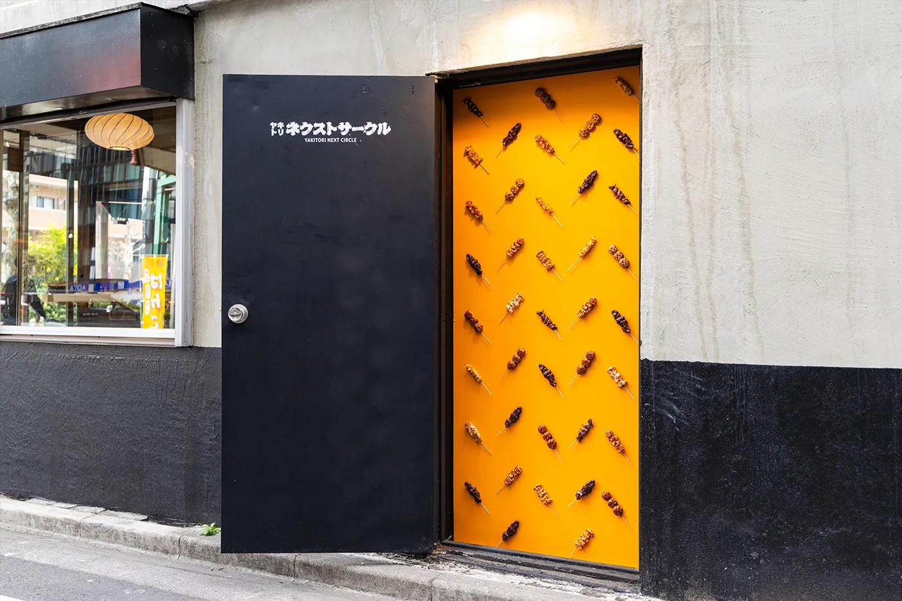
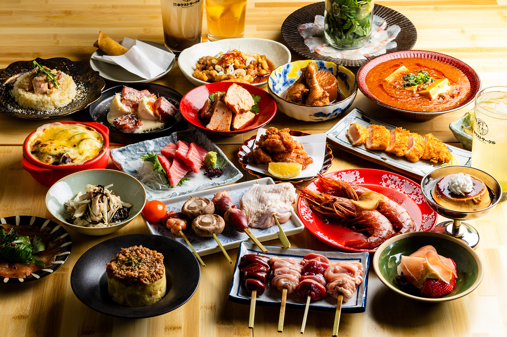
FOODお料理
焼き鳥は、レアな部位や野菜焼きといったアレンジを加えたメニューをご堪能いただけます。
その他にも鶏を含めたオリジナルの逸品を取り揃えております！
もちろん女性に嬉しいデザートも♪
お気軽に本格焼き鳥をお楽しみいただけます。
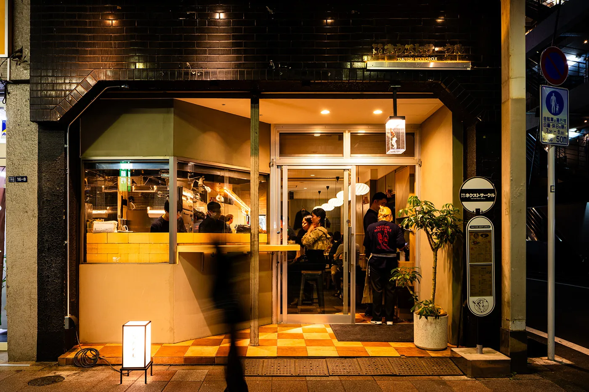
SPACE席・空間
思わず足を運びたくなる、そんなノスタルジックでお洒落な雰囲気のお店です。
女性の方も入りやすいやさしい木目調の店内で、本格的な焼き鳥をご堪能ください。
職場仲間やご友人、またはお仕事終わりの一杯に、ぜひお立ち寄りください！
ACCESS店舗情報
ヤキトリネクストサークル
- 住所
- 〒130-0022
東京都墨田区江東橋2-16-8 1F - 電話番号
- 03-3631-3880
- 営業時間
-
＜月～金・祝前日・祝後日＞
17:00～24:00
(L.O.料理23:00 ドリンク23:30)＜土・日・祝日＞
13:00～24:00
(L.O.料理23:00 ドリンク23:30) - 定休日
- なし
- アクセス
- JR中央・総武線/錦糸町駅(南口)徒歩3分
東京メトロ半蔵門線/錦糸町駅徒歩4分